Summarize, in about one paragraph, your approach to the materials assignment. How did you structure your code? What's cool about it? Are there parts you weren't able to complete?
I created a retro-style television with a simple table. A metal-looking normal map was added to added details on the television.
A plate was created and used boolean to remove some stripes.
Thickness was added to approximate the shape of a table.
Lots of subdivision and bevel were added to make it smooth.
Another plate was added with another subdivision in the middle.
Extrude tool was used to pull out the middle plate as the table support.
Subdivision was applied to make it smooth.
A cube was added with loopcuts to add more edges. Editing these new faces to make them into the shape of a TV.
Bevel some edges to make it more detailed.
Substance painter was used to add pbr material including albedo, metallic and normal map.
ox_bridge_morning was used as the environment map.
The cube utility (bin/cube.exe) is a standalone command-line tool that preprocesses
environment cubemaps for use by the real-time viewer.
It reads and writes cubemaps as RGBE8-encoded PNG images in a vertical-strip layout
(one square face per row, in +X, −X, +Y, −Y, +Z, −Z order).
The typical workflow has three steps:
bin/cube --merge-faces px.png nx.png py.png ny.png pz.png nz.png -o env.png
This was for assembling the cubemap's 6 faces from online converters that receives a panorama image and converts it to a cubemap.
"lambertian" materials:
bin/cube env.png --lambertian env.lambertian.png --size 32.
The --size flag controls the output face resolution (default 16); even small sizes
produce smooth results because the cosine-weighted integral is very low-frequency.
"pbr" materials).
Pre-filter the environment with the GGX NDF at multiple roughness levels and generate the
split-sum BRDF LUT:
bin/cube env.png --ggx env.ggx.png and
bin/cube --brdf-lut brdf_lut.bin.
These two operations use Vulkan compute shaders for performance; the BRDF LUT does not require an input cubemap.
The viewer automatically discovers the precomputed maps by convention: for a scene that references
env.png as its environment radiance cubemap, it looks for env.lambertian.png
in the same directory.
No extra viewer flags are needed—just place the precomputed files next to the scene and run
bin/viewer --scene scene.s72.
The cube utility (bin/cube.exe) processes RGBE8-encoded vertical-strip cubemap PNGs.
All cubemap images use the +X, −X, +Y, −Y, +Z, −Z face order, stored as a W×6W vertical strip.
Multiple operations can be combined in a single invocation (except --merge-faces, which runs standalone).
in.png — (positional) input cubemap path (RGBE8 vertical-strip PNG). Required for --lambertian and --ggx.--lambertian out.png — pre-convolve the input cubemap into a diffuse irradiance cubemap
using cosine-weighted hemisphere integration on the CPU, and store the result as an RGBE8 PNG.
Used at runtime by "lambertian" materials for image-based diffuse lighting.--size N — set the output face resolution for the lambertian cubemap to N×N per face.
Default: 16. Larger values improve quality at the cost of longer precomputation.--ggx out.png — pre-filter the input cubemap with the cosine-weighted GGX normal distribution function
using Vulkan compute, producing a mip chain of cubemaps at decreasing roughness levels. The output base name is used
as a prefix for per-mip-level files. Used at runtime by "pbr" materials for specular IBL.--ggx-samples N — number of importance-sampled directions per output texel for GGX prefiltering.
Default: 1024.--brdf-lut out.bin — precompute the environment BRDF lookup table (the second part of the
split-sum approximation) using Vulkan compute and store it as a raw binary file.
Does not require an input cubemap.--brdf-lut-size N — resolution of the BRDF LUT (N×N).
Default: 512.--brdf-lut-samples N — number of importance samples per BRDF LUT texel.
Default: 1024.--merge-faces px.png nx.png py.png ny.png pz.png nz.png -o out.png
— combine 6 separate square face images into a single vertical-strip cubemap PNG.
The 6 files are taken in +X, −X, +Y, −Y, +Z, −Z order.
All faces must be the same square resolution. Useful for converting cubemaps generated by external tools
into the format expected by the viewer and the other cube utility operations.Example usage:
bin/cube env.png --lambertian env.lambertian.png --size 32bin/cube env.png --lambertian env.lambertian.png --ggx env.ggx.pngbin/cube --brdf-lut brdf_lut.bin --brdf-lut-size 256bin/cube --merge-faces px.png nx.png py.png ny.png pz.png nz.png -o env.png
The viewer (bin/viewer.exe) accepts the following command-line flags.
--exposure E — set the exposure exponent (float). All radiance values are
multiplied by 2E before tone mapping. Default: 0 (i.e., multiplier = 1.0).
Positive values brighten the image; negative values darken it.--tone-map mode — select the tone mapping operator.
Values: linear (clamp to [0,1], the default), reinhard (Reinhard operator: c/(1+c)).
I chose VK_FORMAT_R32G32B32A32_SFLOAT(RGBA 32-bit float per channel) as the on-GPU format. This is what the decoded HDR data is uploaded as.
I defined Tutorial::load_environment_cubemap that loads the RGBE8 PNG, converts it to float HDR RGBA, creates the cubemap image, uploads it, then creates environment_cubemap_view
+environment_cubemap_sampler.
I defined a environment_cubemap to store the cubemap as Helpers::AllocatedImage with arrayLayers support added for cubemaps.
I defined Helpers::create_cube_image that creates a VkImage with VK_IMAGE_CREATE_CUBE_COMPATIBLE_BIT and arrayLayers = 6.
I defined Helpers::transfer_to_cube_image that stages and copies 6 faces into the cube image and transitions it for shader sampling.
Loading environment map and display environment and mirror materials:
All fragment radiance values are first multiplied by an exposure factor of 2^E
(where E defaults to 0, i.e., a multiplier of 1.0) and then passed through a tone mapping operator before being written to the framebuffer.
The exposure and tone mapping mode are stored in the World uniform buffer and uploaded to the GPU each frame,
so all material types (Lambertian, environment, mirror) share the same tone mapping path.
A shared GLSL include file (Materials/tonemap.glsl) provides the apply_tone_map function,
which is called as the final step in objects.frag before writing outColor.
For the custom non-linear tone mapping operator, I chose the Reinhard operator (c / (1 + c)),
which maps HDR radiance values into the [0, 1] range by compressing highlights while preserving detail in darker regions.
It is a simple per-channel operation that gracefully prevents bright areas from clipping to white, making it well-suited for scenes lit by HDR environment probes.
The operator is selectable via the --tone-map reinhard command-line option.
Linear tone mapping with exposure = 0 and 2:
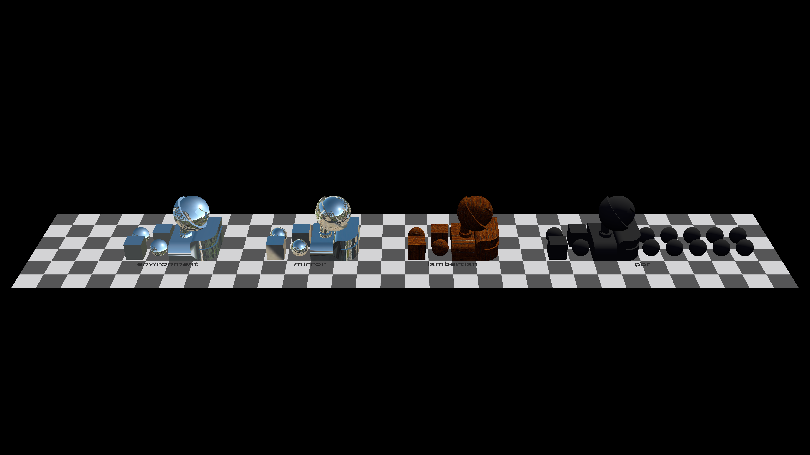
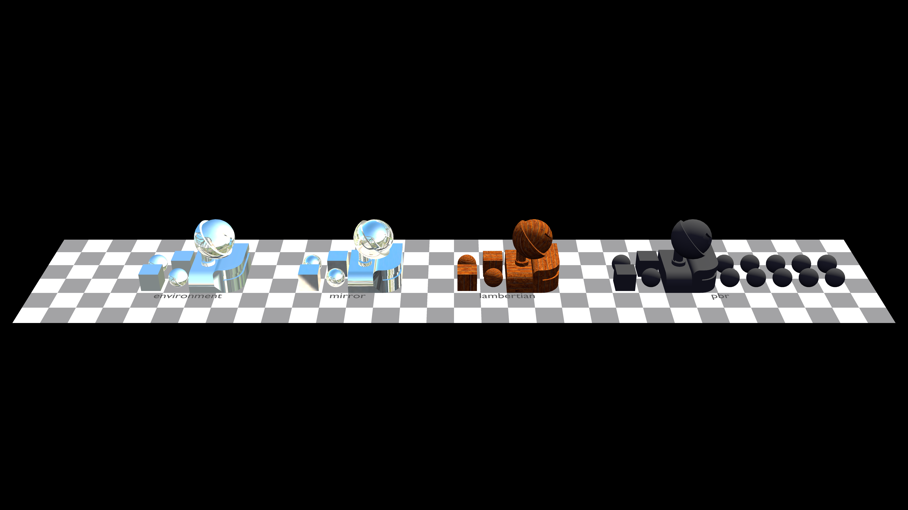
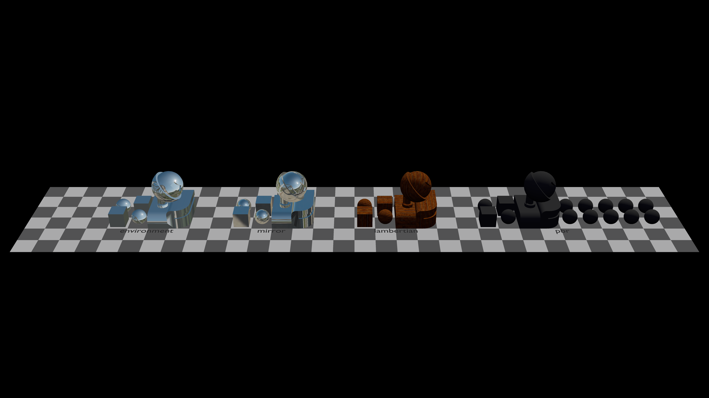
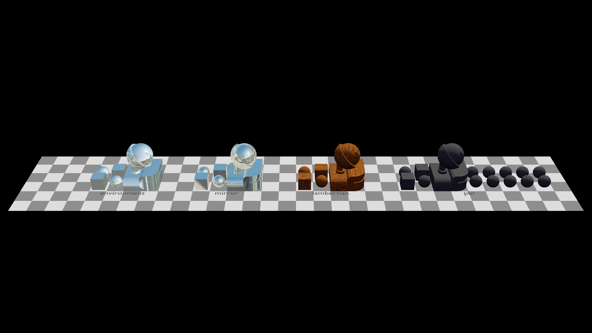
The charts below plot the output of each tone mapping mode for a test color
(1.0·I, 0.5·I, 0.1·I) as input intensity I increases
(with exposure = 0, i.e., multiplier = 1.0).
Because the three channels have different magnitudes, a per-channel nonlinear operator
compresses them by different amounts—the higher-energy red channel saturates faster
than blue, gradually shifting hue toward white at high intensities.
c / (1 + c)): each channel curves smoothly toward 1.0 but never reaches it.
Higher-magnitude channels compress more aggressively, causing a gradual hue shift toward white at high intensities.
The lambertian material is implemented across three stages: an offline precomputation utility, a runtime loading and GPU resource pipeline, and a fragment shader that dispatches based on material type.
1. Offline precomputation (Materials/cube.cpp)
A standalone cube utility pre-convolves an environment radiance cubemap into a lambertian irradiance lookup cubemap.
For each output texel with direction n, it numerically integrates the rendering equation for a perfect diffuse surface:
E(n) = (1/π) ∑ L(ω) · max(dot(n, ω), 0) · dω,
where dω is the solid angle of each input texel, computed using the cube-face Jacobian
4 / (N² · (s² + t² + 1)3/2).
The output is a small (default 16×16 per face) RGBE-encoded vertical-strip PNG named
env.lambertian.png for a given env.png, matching the s72 convention.
2. Runtime loading and GPU plumbing
Tutorial::load_lambertian_cubemap() (in Materials/Materials.cpp) derives the
.lambertian.png path from the environment's radiance texture path, loads it with stb_image,
decodes RGBE to RGBA32F, creates a 6-layer cube image via Helpers::create_cube_image,
uploads it via Helpers::transfer_to_cube_image, and creates a VkImageView (cube type) and VkSampler.
In the constructor (Tutorial.cpp), the texture descriptor pool is sized to include the lambertian cubemap.
A VkDescriptorSet is allocated using ObjectsPipeline::set4_LambertianCubemap
(a COMBINED_IMAGE_SAMPLER layout at set 4, binding 0) and written with the lambertian cubemap view and sampler.
A has_lambertian flag (uint32_t) is added to the ObjectsPipeline::World uniform struct.
Each frame in update(), it is set to 1 if the lambertian cubemap was successfully loaded, 0 otherwise.
During rendering, descriptor set 4 is bound once before the per-instance draw loop when the lambertian cubemap is available.
3. Fragment shader (objects.frag)
Each instance's material_type is passed via push constants.
When material_type == 0 (Lambertian), the shader checks the has_lambertian uniform flag.
If the pre-convolved cubemap is available, it samples the lambertian irradiance cubemap along the surface normal:
e = texture(LAMBERTIAN_CUBEMAP, n).rgb;
This single texture lookup replaces the analytical sky+sun hemisphere approximation.
The result is multiplied by the albedo from the material's 2D texture to produce the final diffuse radiance:
radiance = e * albedo;
If no lambertian cubemap is loaded, the shader falls back to the original analytical lighting model
using SKY_ENERGY, SKY_DIRECTION, SUN_ENERGY, and SUN_DIRECTION.
The key insight is that the heavy hemisphere integral is computed once offline by the cube utility,
allowing the runtime shader to replace a costly per-fragment integration with a single cubemap lookup
indexed by the surface normal—which is valid because the cosine-weighted hemisphere integral
depends only on the normal direction, not the surface position.
Lambertain cubemap pre-filtering:
Cubemap viewer:
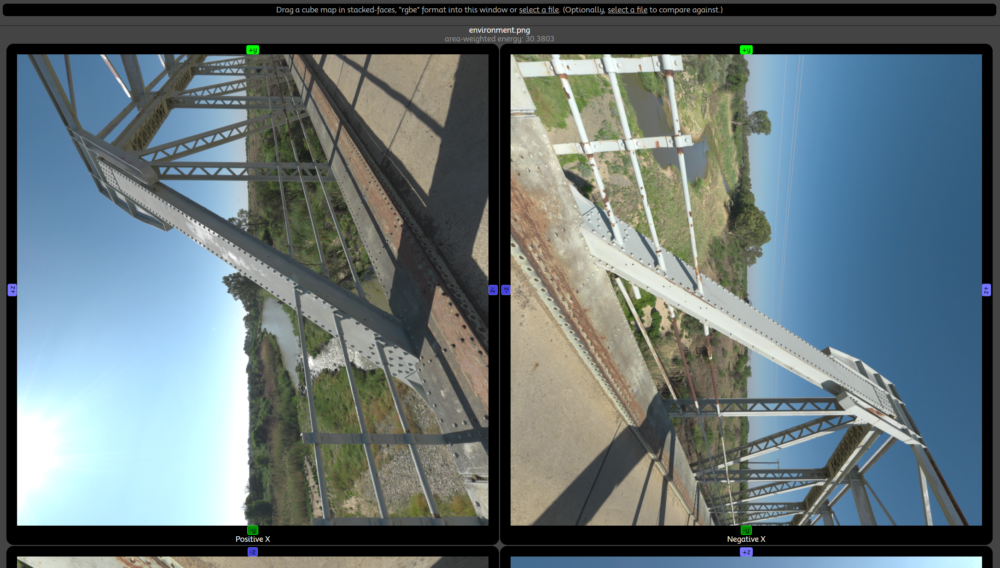
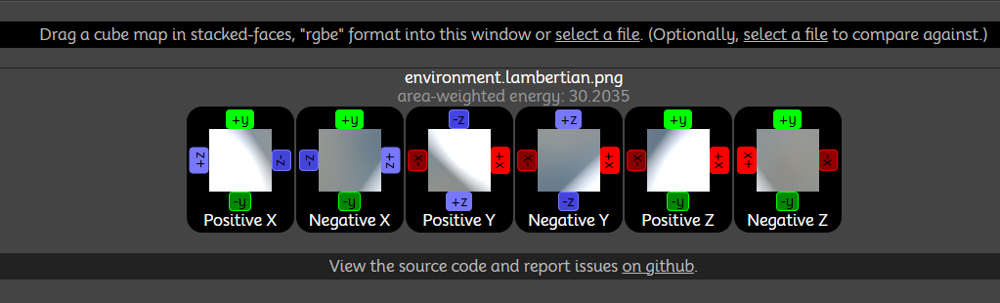
Without and with lambertian cubemap:
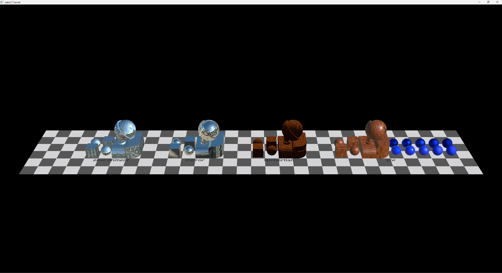
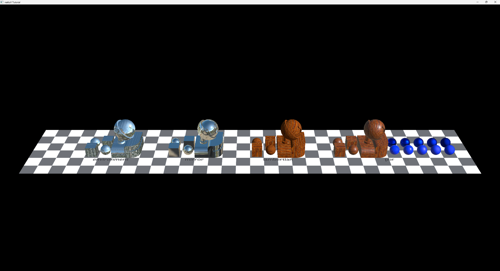
Normal mapping is implemented in two stages: texture loading on the CPU side and TBN-based normal perturbation in the fragment shader.
1. Vertex format and tangent loading
The PosNorTexVertex struct (in PosNorTexVertex.hpp) includes a Tangent field
(vec4: .xyz = tangent direction, .w = bitangent sign),
giving a 48-byte stride that matches the .b72 on-disk layout exactly.
During mesh loading (Tutorial.cpp), the "TANGENT" attribute is read from .b72
data at its declared offset (default 24) and stored per-vertex.
Meshes without a tangent attribute get a default of (1, 0, 0, +1).
2. Normal map texture loading (Materials/Materials.cpp)
Tutorial::build_normal_map_textures() first creates a 1×1 default normal map with pixel value
(128, 128, 255, 255), which decodes to (0, 0, 1) in tangent space after the *2−1
bias—i.e., the unperturbed normal.
It then iterates over all scene materials: for each material whose normal_map is non-null and
of type flat, it loads the PNG via stbi_load (4 channels) and creates a GPU image with
VK_FORMAT_R8G8B8A8_UNORM—critically not _SRGB, because normal maps
encode linear direction data, not perceptual color.
The resulting index into normal_map_textures is stored in mat_to_normal_tex;
materials without a normal map map to the default (index 0).
3. Descriptor set and pipeline plumbing
A new descriptor set layout set5_NormalMap (1 combined image sampler, fragment stage) is added to the
objects pipeline in Tutorial-ObjectsPipeline.cpp, bringing the total to 6 descriptor sets.
In the constructor (Tutorial.cpp), one VkDescriptorSet is allocated per normal map texture
from the shared descriptor pool.
Each ObjectInstance carries a normal_map_texture index (set from mat_to_normal_tex
during traverse_node), and in the render loop, the appropriate set 5 descriptor is bound per instance
before each draw call.
Because every material always has a valid normal map descriptor bound (the 1×1 default for materials without one),
the shader needs no branching flag.
4. Vertex shader (objects.vert)
The vertex shader accepts Tangent at location 2 and outputs the world-space tangent vector
(transformed by WORLD_FROM_LOCAL_NORMAL, the same matrix used for the normal) and the
bitangent sign (Tangent.w) as separate varyings.
5. Fragment shader (objects.frag)
The TBN matrix is constructed from the interpolated normal and tangent:
the tangent is re-orthogonalized via Gram–Schmidt (T = normalize(T − dot(T, N) * N)),
the bitangent is computed as B = cross(N, T) * bitangent_sign,
and the TBN matrix is mat3(T, B, N).
The normal map is sampled with texture(NORMAL_MAP, texCoord).rgb * 2.0 − 1.0
to undo the n * 0.5 + 0.5 storage bias, then the tangent-space normal is transformed to
world space via n = normalize(TBN * map_n).
This perturbed normal n is then used for all subsequent lighting: lambertian diffuse,
cubemap lookups, mirror reflection, etc.
Normal mapping:
What, if any, is the performance impact of normal mapping in your viewer? Can you make normal mapping a bottleneck? (I'm not actually sure if you can! Asking this one out of curiosity to see what you try.) If so, please include the scene.
The "pbr" material is implemented using the split-sum approximation of the rendering equation,
spanning offline precomputation in the cube utility (Vulkan compute), runtime resource loading,
and a fragment shader that combines specular and diffuse IBL.
1. GGX pre-filtered cubemap (cube --ggx)
The compute_ggx function in Materials/cube.cpp generates a mip chain of pre-filtered
environment cubemaps at 5 roughness levels (0.2, 0.4, 0.6, 0.8, 1.0),
each stored as a halved-resolution RGBE8 vertical-strip PNG
(e.g., env.ggx.1.png through env.ggx.5.png).
The input RGBE8 cubemap is decoded to RGBA32F on the CPU, uploaded to a VkImage
with VK_IMAGE_CREATE_CUBE_COMPATIBLE_BIT and 6 array layers,
and sampled via a cube VkImageView + linear VkSampler.
A Vulkan compute shader (Materials/ggx_convolve.comp) performs the integration.
For each output texel with normal direction N, it importance-samples the GGX NDF
using the Hammersley low-discrepancy sequence (default 1024 samples).
For each sample, it generates a half-vector H via
importance_sample_ggx(xi, N, α²),
reflects to get the light direction L = 2·dot(V,H)·H − V,
and accumulates L(L)·max(dot(N,L),0), weighting by NdotL.
The final value is normalized by the accumulated weight: color /= max(weight, 0.001).
The shader dispatches 6 times per mip level (once per face),
with push constants carrying roughness, face, output_size, and num_samples.
After each face, the output image is copied to a staging buffer,
then the 6 faces are RGBE-encoded and written as a vertical-strip PNG.
2. Environment BRDF LUT (cube --brdf-lut)
The compute_brdf_lut function generates a 2D lookup table (the second part of the split-sum)
using a Vulkan compute shader (Materials/brdf_lut.comp).
The LUT is parameterized by NdotV (x-axis) and roughness (y-axis).
For each texel, the shader importance-samples the GGX NDF and accumulates the scale and bias
terms of the Fresnel split:
scale += G_Vis·(1 − Fc) and bias += G_Vis·Fc,
where Fc = (1 − VdotH)5 (Schlick) and
G_Vis = G(NdotV, NdotL, α) · VdotH / (NdotH · NdotV)
using the Smith–Schlick–GGX geometry function with k = (α²)/2.
The output is a single VK_FORMAT_R16G16_SFLOAT image (16-bit float, 2 channels),
stored on disk as a raw binary file with an 8-byte header (width, height as uint32_t)
followed by the pixel data.
Default resolution is 512×512 with 1024 samples per texel.
3. Runtime loading
Tutorial::load_ggx_cubemap() (in Materials/Materials.cpp) discovers
GGX mip files by scanning for env.ggx.1.png, env.ggx.2.png, etc.
It loads each mip’s RGBE8 PNG, decodes to RGBA32F, and uploads all mip levels into a single
VkImage with 6 array layers and mipLevels = num_mips + 1
(mip 0 is the original full-resolution environment).
The VkSampler is configured with maxLod = float(num_mips)
so that textureLod can interpolate between mip levels by roughness.
If no GGX mip files are found, a 1×1 fallback cubemap is created.
Tutorial::load_brdf_lut() reads the binary LUT from brdf_lut.bin,
creates a 2D VK_FORMAT_R16G16_SFLOAT image, and uploads the data.
If the file is missing, a 1×1 fallback (0.0, 0.0) is used.
Both the GGX cubemap and BRDF LUT are bound together in descriptor set 7
(set7_PBREnv: binding 0 = samplerCube GGX_CUBEMAP,
binding 1 = sampler2D BRDF_LUT).
Per-material roughness and metalness textures are bound at set 6
(set6_PBRMaps: binding 0 = ROUGHNESS_MAP,
binding 1 = METALNESS_MAP).
4. Fragment shader (objects.frag)
When material_type == 3 (PBR), the shader implements the split-sum approximation:
reflect(−V, n) is used to
sample the GGX pre-filtered cubemap at a LOD determined by roughness:
textureLod(GGX_CUBEMAP, R, roughness * ggx_max_lod).
The BRDF LUT is sampled at (NdotV, roughness) to get the scale and bias terms.
The specular contribution is prefilteredColor * (F0 * envBRDF.x + envBRDF.y),
where F0 = mix(0.04, albedo, metalness).kD = (1 − F) * (1 − metalness) is computed using the full Schlick Fresnel.
The irradiance comes from the lambertian pre-convolved cubemap (if available) or the analytical
sky+sun fallback. The diffuse contribution is kD * albedo * irradiance.diffuse + specular, then passed through tone mapping.
"pbr" material working:
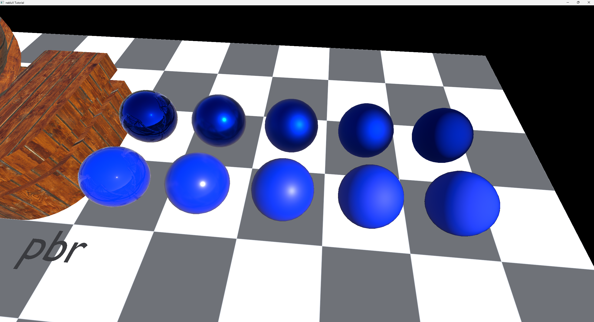
Pre-filter cube maps with the cosine-weighted GGX normal distribution function:
Original environment map:
Mip level 1 (roughness = 0.2):
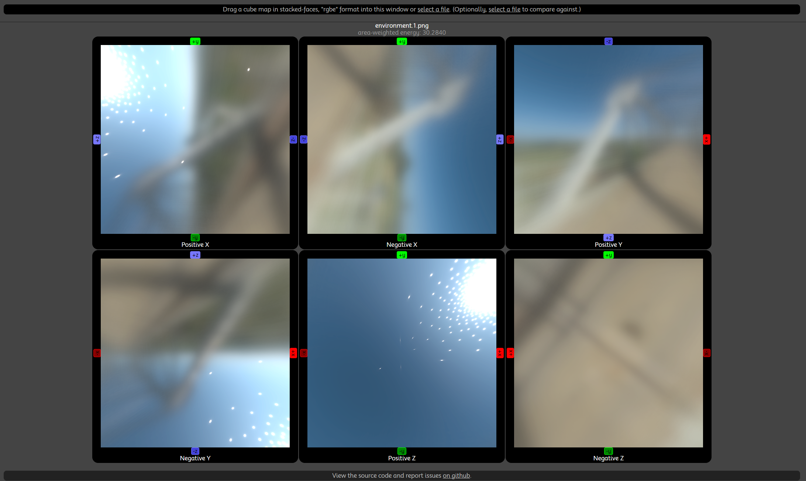
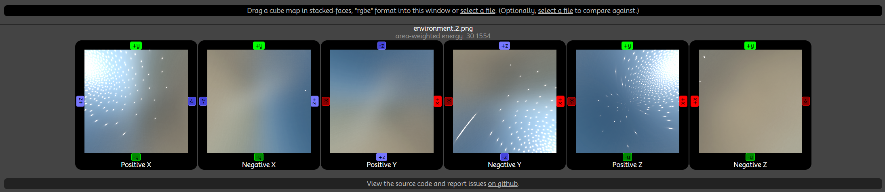
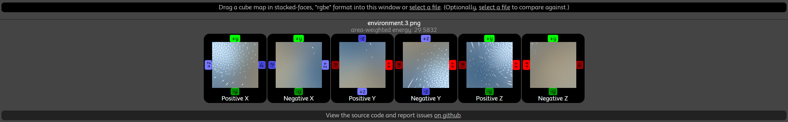
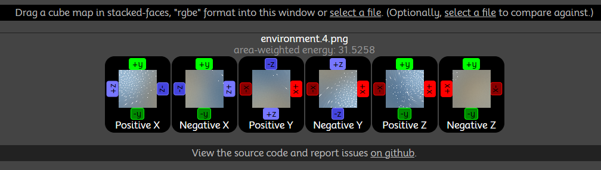
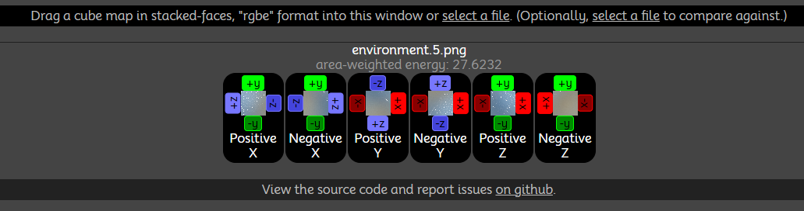
BRDF pre-integration (Karis's vs. Mine):
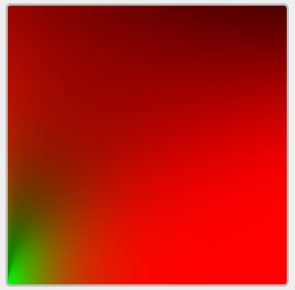
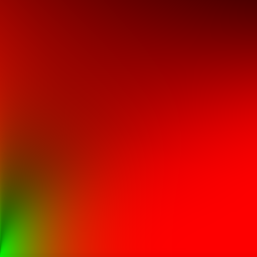